User guide
1 · Getting started: your first plot in 5 steps
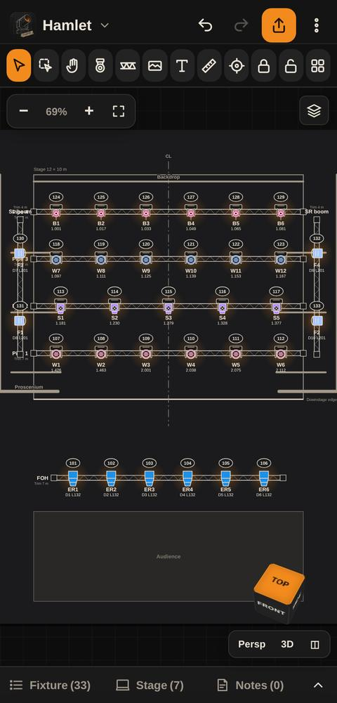
- Start a project. Tap the project name at the top › My projects › New project. On the Info tab enter the show, venue, designer and stage width / depth.
- Build the stage. For a quick start pick a template from ⋮ › Stage templates (proscenium, black box, arena…): pipes, legs and backdrop are scaled to your size. Or draw pipes one by one with the Pipe button.
- Place fixtures. Tap Fixture in the toolbar, pick a type (e.g. Moving Wash) and tap a pipe. Fixtures dropped near a pipe snap onto it and never overlap.
- Number and patch. Give unit numbers W1, W2… from the properties or by tapping fixtures in order with Numbering; enter console channels and DMX addresses.
- Export. Orange Export button › Rider PDF: scaled plot, equipment list, power total, patch list and gel list in one file.
2 · Screen layout: bars, cube and bottom panel
On a phone the screen has four parts:
- Top bar: logo and project name (tap for Projects), Undo, Redo, orange Export and the ⋮ menu (Search, Patch list, Library, Stage templates, Projects, My layout, Layout, Edit toolbar, Settings, Help).
- Toolbar: Select, Multi-select, Pan, Fixture, Pipe, Scenery, Text, Measure, Focus, Lock, Unlock, More tools. The active tool is orange; tap again to turn it off.
- Drawing area: zoom box top left (− percent + fit), Layers top right, the view cube bottom right.
- Bottom panel: the Fixtures tab groups by model (unit range like W1–W6, count, eye to hide, ⋯ for properties); Stage lists the stage and pipes; Notes lists texts. Swipe up on the tabs to open, down to close.
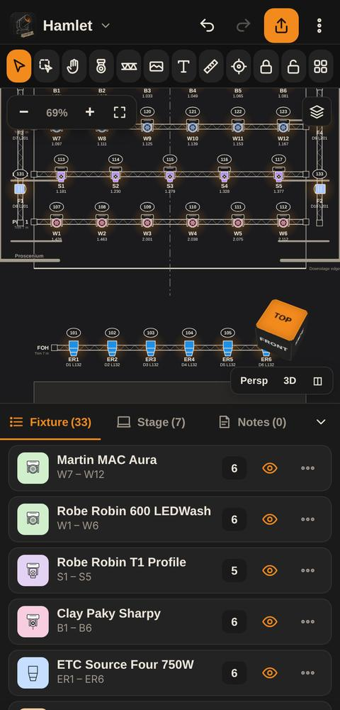
3 · Navigating, selecting and multi-select
Phone and tablet- Two fingers: pan and zoom. ⤢ in the zoom box fits the plot to the screen.
- Tap: select. Tap empty space: deselect.
- Drag with one finger on empty space: select everything in the area.
- With Multi-select on, everything you tap is added to the selection.
- With Pan (hand) on, one finger moves the plot and nothing gets moved by accident.
- Press and hold: menu (section 10). With a selection, the menu applies to all selected items.
- Wheel: zoom. Right or middle drag: pan. Drag on empty space: area select.
- Shift/Ctrl + click: add / remove. Double-click: properties. Right-click: menu.
When something is selected the selection bar appears at the bottom: Edit, Copy, Duplicate, Rotate, Delete.
4 · Projects, venues and stage templates
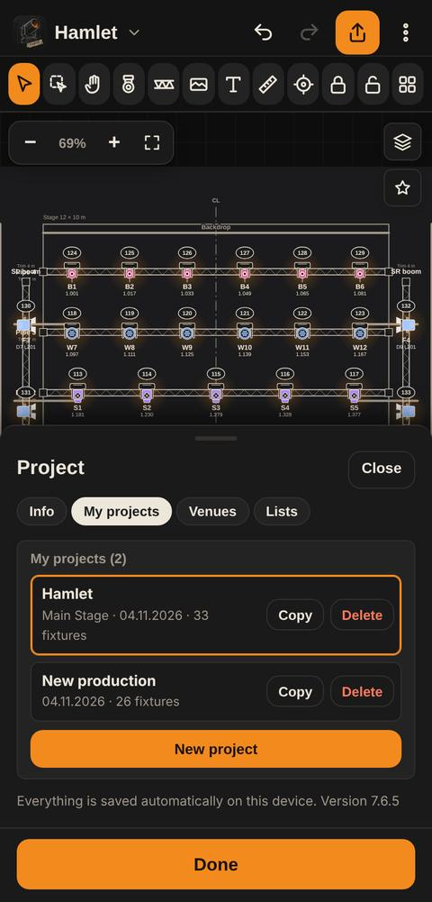
- Each show is its own project. Tap the project name › My projects: open, copy, delete.
- Venues: save a theatre you tour to (stage, pipes, scenery and optionally a house rig). Tap it to start a new project with that venue ready. Venues can be shared as files.
- Stage templates (⋮ menu): proscenium, studio / black box, thrust, arena, traverse, concert, empty. Enter the sizes; pipes, legs and backdrop are built to scale. Apply to this project or Open as new project.
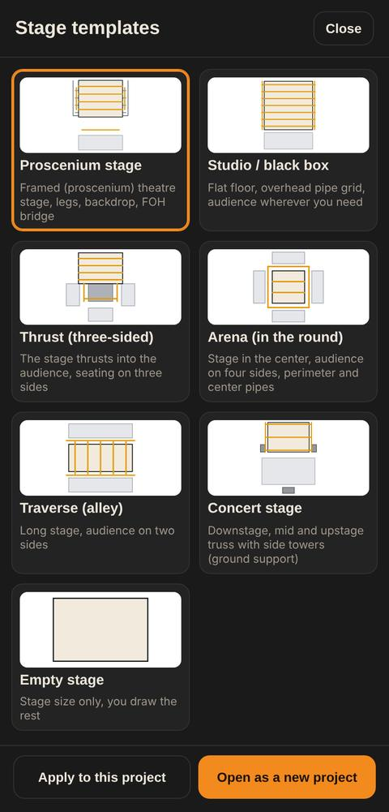
5 · Stage, pipes and booms
- Pipe tool: drag from start to end on the plot. More tools › Stage has Pipe, Boom / side pipe, Upright tower and Pipe array (count and spacing in one go).
- Drag a pipe to move it; its fixtures travel with it.
- Tap the pipe › Settings: name, length, direction, distance from the stage edge, angle and height (trim).
- Angle: turn the pipe to any angle (−15° / +15° buttons or type a value). Its fixtures rotate with it and stay attached.
- Press and hold a pipe: Add fixtures › (add, fill with N fixtures, paste), Fixtures on it › (spread evenly, select, select one type), Pipe › (copy with fixtures, split here, height, set angle), Lock, Delete.
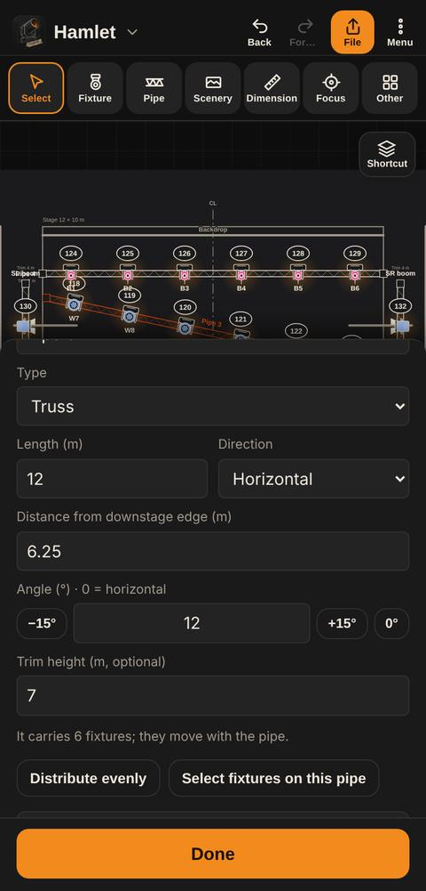
6 · Upright towers and heights (x, y, z)
The plot is the view from above (x: left-right, y: depth). Height (z) is edited in the front and side views, which work just like the plot:
- Drag a pipe up or down: its height (trim) changes. Drag it sideways: x changes in the front view, depth in the side view. Its fixtures travel with it.
- Fixtures can be dragged along their pipe. Dragging a fixture that is not on a pipe (on the floor, a stand or an upright tower) up or down changes its height.
- Zoom with the wheel or two fingers, pan with one finger on empty space, double-tap to fit. Double-tap an object to open its properties.
Upright tower: a truss tower standing up from the floor. It shows as a small square (☒) on the plot, at full height in the front and side views and upright in 3D.
- More tools › Stage › Upright tower. It is added beside the stage; drag it into place on the plot.
- In the tower settings enter the Height and tap Hang fixtures on tower…: count, lowest height, spacing and fixture.
- Switch to the front view and drag the fixtures up or down to their exact heights.
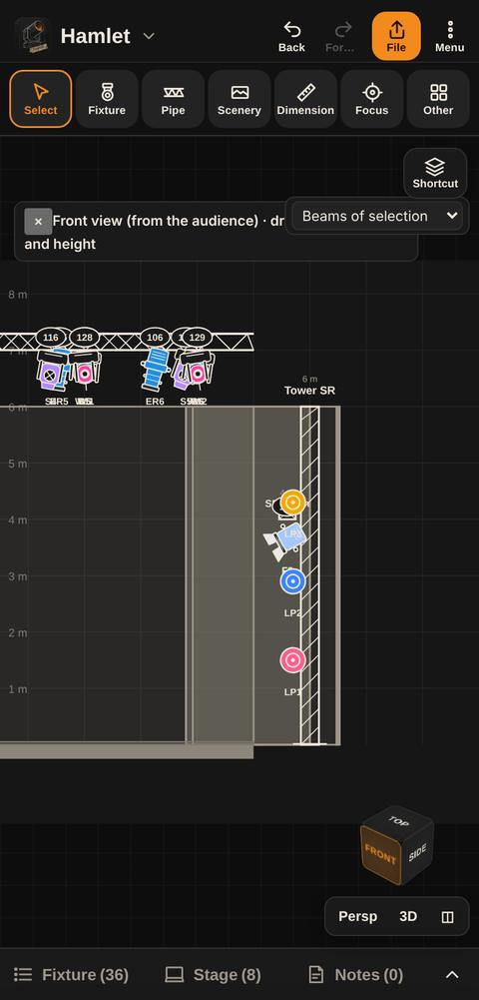
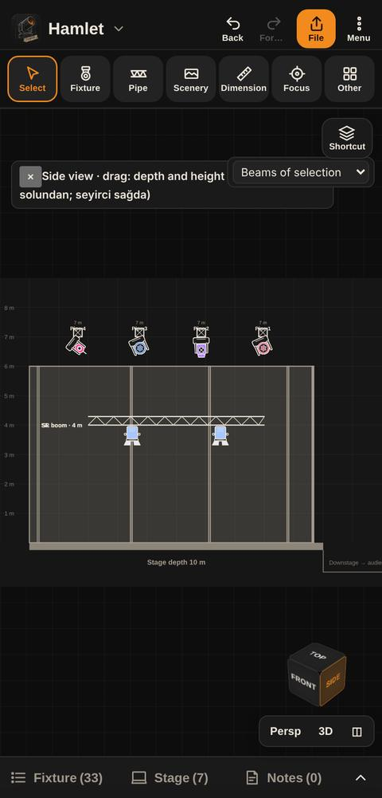
7 · Adding fixtures and the fixture library
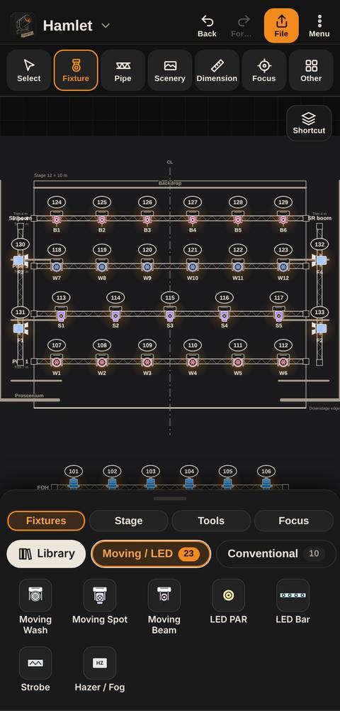
- Fixture button: groups (Moving / LED, Conventional, Other, Custom symbols). Pick a type and tap the plot or a pipe; keep tapping to place more. Go back to Select when done.
- Fixtures never overlap; if the pipe is full they slide beside it.
- Fixture library (⋮ › Library or the Library button on the sheet): thousands of real fixtures, offline. Search brand / model and tap Place. Fixtures come with modes, channel maps, power, weight and real dimensions.
- Import GDTF, Open Fixture Library (.json) and QLC+ (.qxf) files into the library. For anything missing use Custom symbols › New symbol.
- Fill a pipe: press and hold the pipe › Add fixtures › Fill pipe… › count and fixture; they are spaced evenly.
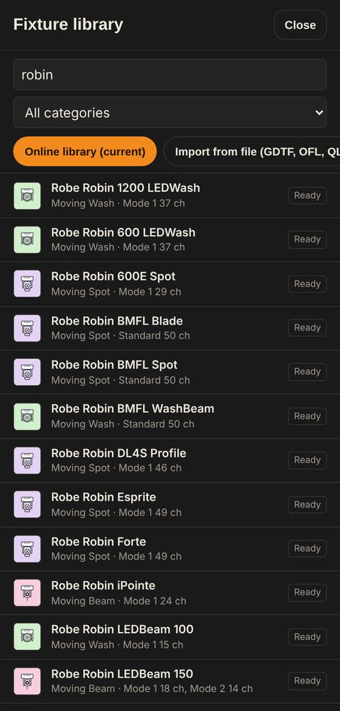
8 · Fixture properties
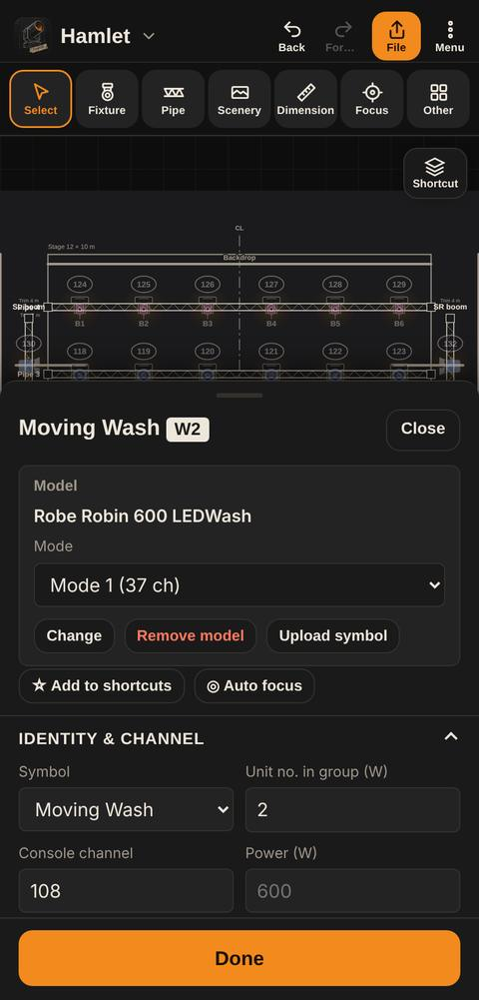
Tap a fixture and press Edit in the selection bar (or press and hold › Properties). With several fixtures selected the change applies to all.
- Model and mode: assign a library model and choose its mode; channel count and channel map come with it.
- Identity and channel: symbol type, unit number (W3), console channel, power.
- DMX: universe and address; dimmer number for conventionals.
- Gel (Lee / Rosco code), gobo, symbol color, note.
- Height (m): for fixtures not on a pipe.
- Beam: select a fixture to see its beam; drag the orange dot to focus it.
After typing a value tap Done at the bottom: the value is saved and the sheet closes.
9 · Numbering, console channels and addressing
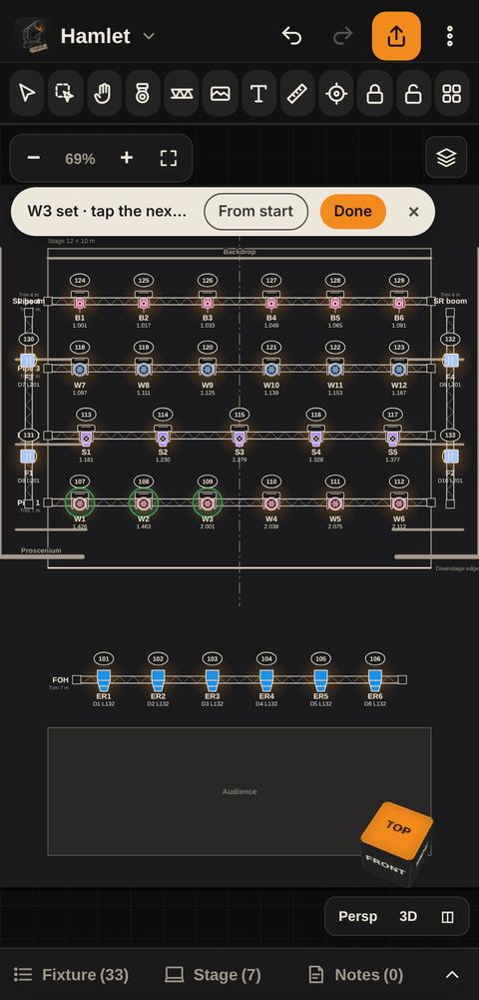
- Each type is numbered on its own: W1, W2… S1, S2…
- Numbering (More tools, or add it to the toolbar): tap fixtures in any order. Restart resets the counter, Done ends it.
- Number the selection: press and hold › Quick settings › Number… (front to back, left to right).
- Changing a unit number by hand swaps it with the fixture that had that number; numbers never clash.
- Set console channel… and Set DMX address… (Quick settings) give the selection consecutive values; addresses step by each fixture’s channel count.
- Auto patch in the patch list puts unaddressed DMX fixtures on free addresses (section 15).
10 · Editing and the press-and-hold / right-click menu
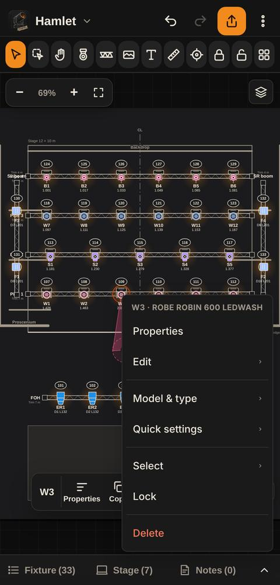
Right-click on a computer, press and hold on a phone. The menu is grouped:
- Fixture: Properties · Edit › (copy, duplicate, paste, rotate 90°, mirror, align and distribute, hide) · Model & type › · Quick settings › (channel, DMX, gel, changed patch, gobo, note, number) · Select › (same type, same model, on this pipe) · Lock · Delete.
- Pipe: Settings · Add fixtures › · Fixtures on it › · Pipe › · Lock · Delete ›.
- Empty space: Add › (fixture, pipe, boom, text, scenery, paste) · Tools › (measure, focus, repeat) · View › · Layers › · Selection ›.
- Mirror copies the selection to the other side of the centre line.
- Repeat (the . key on a computer) repeats the last action where the cursor is.
- Made a mistake? Undo at the top.
11 · Locking
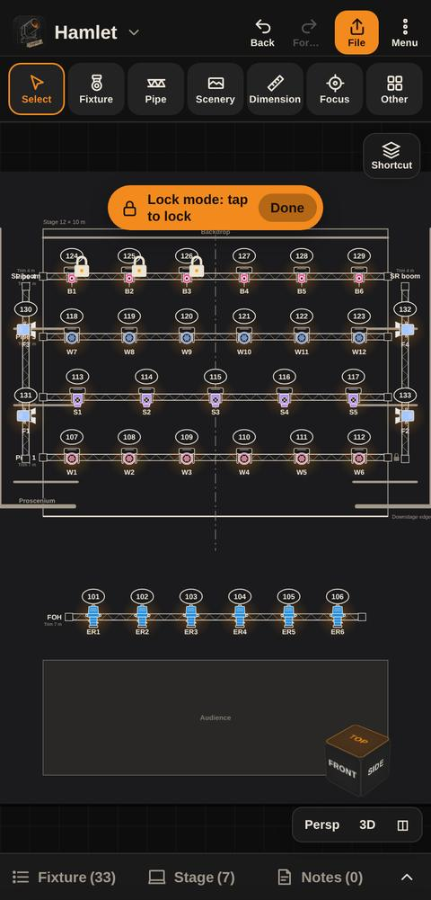
- Tap Lock once: the button stays on and a “Lock mode” bar appears at the top. Every fixture, pipe, scenery piece, text and dimension you tap is locked; no need to press the button each time.
- Unlock works the same way: while it is on, tapping a locked object unlocks it.
- Tap the button again or Done on the bar to leave the mode.
- Anything selected before the mode starts is locked immediately.
- A locked fixture stays in place but can still be selected, edited, lit and focused. Locked objects show a small lock icon.
- To unlock everything: press and hold empty space › Selection › Unlock all.
12 · Scenery, legs, performers and objects
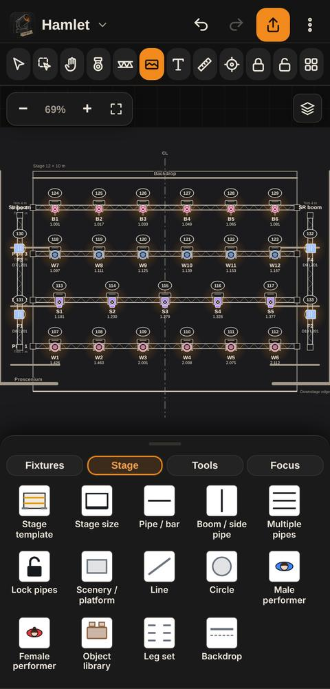
- Scenery / platform: drag corner to corner. Circle: centre to edge. Line: drape, wall.
- Leg set: evenly spaced legs left and right, optionally with backdrop and borders.
- Male / female performer: placed where you tap; type a name and turn them with the orange dot.
- Object library: table, chair, armchair, bed, piano, door, rostrum, stairs… Objects appear at their real height in the front, side, perspective and 3D views.
- Your own object: draw the parts, give each a height and height above floor, select all › Save to object library.
- Every piece can have a label, color, line width, dashes, fill and height.
13 · Dimensions, cable runs and text
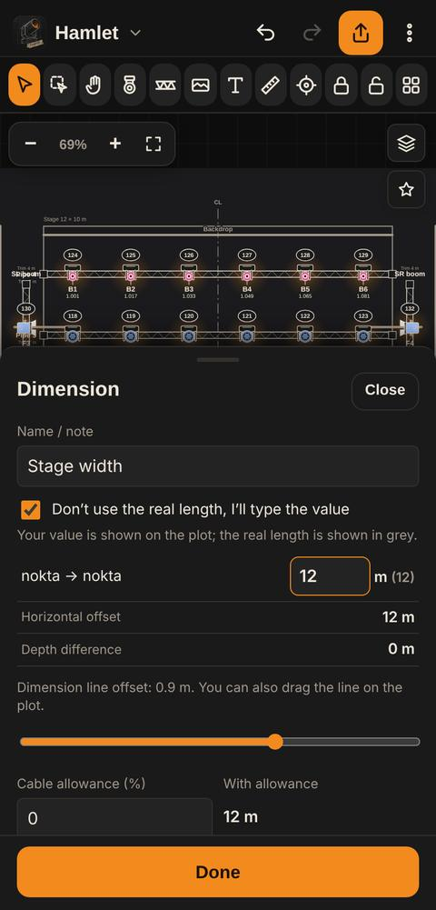
- Measure tool: tap two points or two fixtures (or drag from one to the other); the distance is written. Drag the dimension line to offset it.
- Chain: draw a cable run point by point; total length and cable allowance (%) are calculated.
- Manual value: if part of the plot is drawn not to scale so it fits, select the dimension › check “Don’t use the real length, I’ll type the value” › type the length for each segment. Your value shows on the plot and in PDFs; uncheck to go back to the real length.
- A dimension whose ends are attached to fixtures updates when the fixture moves.
- Text tool: places a text where you tap; edit it in the panel, resize with the corner handle.
14 · Views: cube, front, side, perspective and 3D
The view cube bottom right shows which way you are looking. Tap a face to switch: TOP = plot, FRONT = from the audience, SIDE = from the side. Under the cube: Persp (perspective drawing), 3D (live 3D) and ◫ (split screen).
- Front / side: edit by dragging as in section 6; zoom and pan.
- Perspective: a drawing-style perspective of the plot with pipes at their heights, beams, scenery and performers. Drag to rotate; preset angles: Front left, Front right, From audience, From above.
- 3D: drag to orbit, two fingers to pan and zoom. Tap a fixture to select it; the bar at the top turns it on or off and sets intensity and color. ⚙ for ambient light, haze, room and shadows. 📷 saves the current view as a high-resolution image.
- ◫ Split screen: edit the plot at the top while 3D or the front view updates live below.
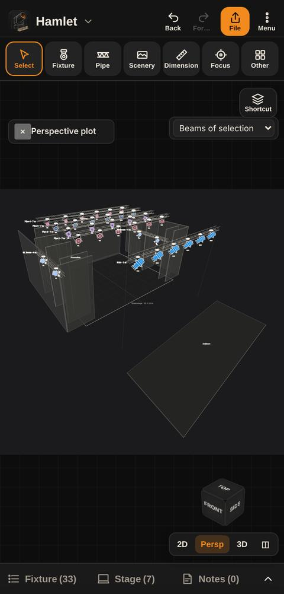
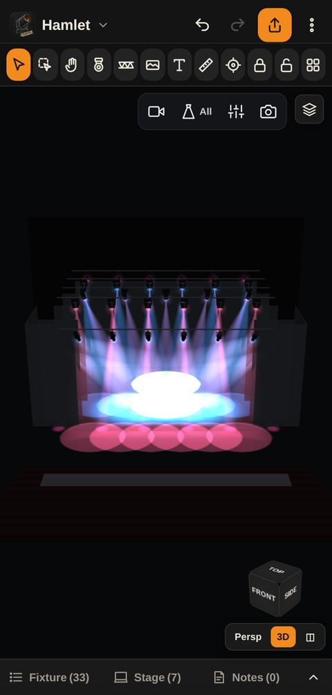
15 · Patch list
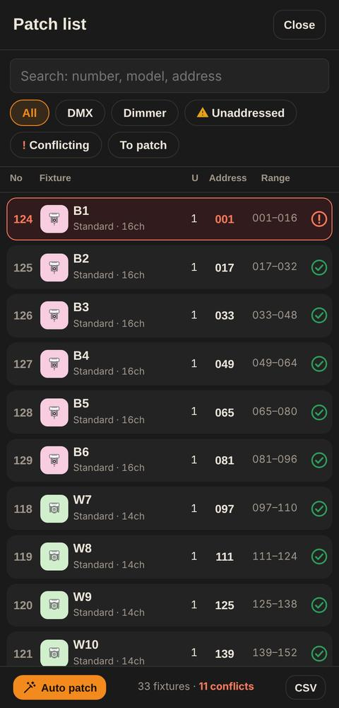
⋮ › Patch list. Each row is a fixture: console channel, icon, unit and mode, universe, address, address range and status.
- Status: green ✓ fine · red ! address conflict · yellow ⚠ no address.
- Filters at the top: All, DMX, Dimmer, Unaddressed, Conflicting, To patch. The search box looks in units, models and addresses.
- Tap a row to edit channel, universe and address in place; Done closes it, Show on plot finds it on the plot.
- Below the list: universe usage (e.g. 36 / 512) and Address conflict, Unaddressed and To patch cards; tap a card to open that list.
- Auto patch puts unaddressed DMX fixtures on free addresses in order. CSV exports the list for Excel.
16 · Focus mode (focusing on stage)
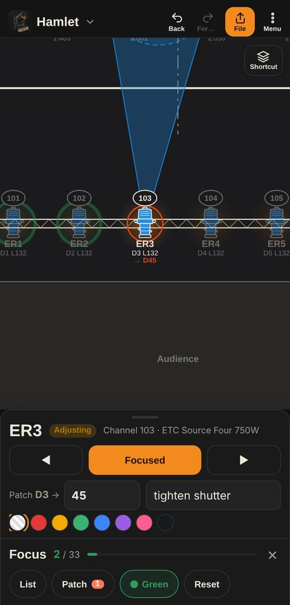
- Tap Focus in the toolbar. The focus bar opens at the bottom and stays until you leave focus mode: how many are focused (e.g. 2 / 33), Start / Next, List, Patch, Green, Reset.
- Tap a fixture (or Start): the focus box opens above the bar. ◀ ▶ moves to the next fixture and the plot zooms to it.
- Tap Focused: the fixture is marked green on the plot. Tapped by mistake? Tap again to undo.
- Patch → Changed: if it was plugged into a different dimmer or address on site, type it; the plot shows a red “→ D45”. Note: a focus note like “tighten shutters”. Color dots mark the symbol.
- Tap empty space to close the box; the bar stays. × on the bar leaves focus mode.
- List: the focus page with focused fixtures and changed patches together, exportable as PDF.
- Patch: the re-patch list (hung differently on site). These notes are temporary; the plot and console data stay as they are. Clear them after the show.
17 · Export: Rider PDF and other outputs
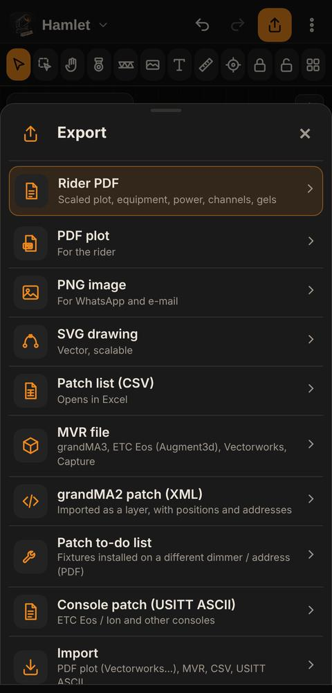
- Rider PDF: scaled plot (best scale chosen automatically), equipment list, total power and amps per phase, pipe dimensions, channel / patch list, gel cut list, notes; optionally front, side and perspective pages. Page layout: separate lists or a single sheet (plot + symbols).
- Tap a page in the preview to open it full screen; zoom up to 800% with + / −, two fingers or a double tap, and move between pages with ◀ ▶.
- PDF plot, PNG image (WhatsApp / e-mail), SVG drawing (vector).
- Patch list (CSV), MVR file (grandMA3, ETC Eos Augment3d, Vectorworks, Capture), grandMA2 patch (XML), Console patch (USITT ASCII), Patch to-do list (PDF).
- Save project (.json): a backup or to continue on another device; restore with Open project.
- On a phone, Download or Share appears when the file is ready.
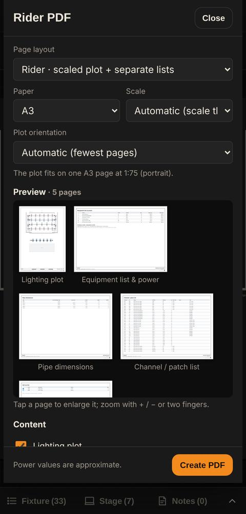
18 · Importing
Export › Import:
- PDF plot: the PDF of a lighting plot drawn in another program. The symbol list is read, symbols are recognised by color and size, pipes and notes are extracted. Choose the page and area first, then check the matches.
- MVR: opens as a new project or adds to yours; pipes are created from fixture positions and any GDTF files go into your library.
- CSV (from a console, Lightwright or Excel): bulk-updates channels, addresses, dimmers and gels or adds new fixtures.
- USITT ASCII: updates addresses by console channel.
- Project (.json) and venue files.
19 · Layout settings and My layout
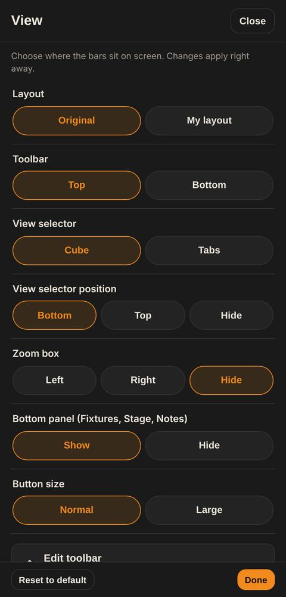
⋮ › Layout. Changes apply right away; Reset to default restores the original.
- Toolbar: top or bottom. View selector: cube or tabs; position bottom, top or hidden. Zoom box: left, right, hidden. Bottom panel: show / hide. Button size: normal / large.
- Edit toolbar: which buttons appear and in what order (✓ to add / remove, arrows to reorder).
My layout: your own working screen. The original screen stays as it is; switch between them from the ⋮ menu.
- When it is on, the top toolbar goes away and floating boxes appear over the plot.
- Drag a box anywhere by its ⋮⋮ handle.
- ⋮ › Edit my layout: each box gets ✎ (which buttons go inside), ⇄ (horizontal / vertical), ✕ (delete); + Add box and Done at the top.

20 · Layers: hide and lock
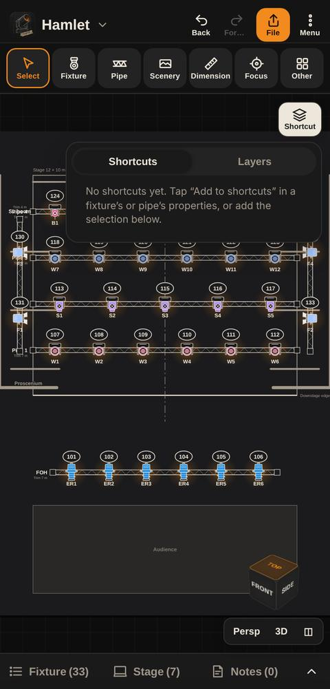
- Tap Layers top right of the drawing area. The eye hides / shows, the lock locks / unlocks.
- Layers: pipes and booms, fixtures, scenery and legs, performers, texts, dimensions, pipe dimension chain.
- Objects on a locked layer can’t be selected or moved. Hidden layers don’t show on screen or in PDF / PNG exports.
- Your own layers: select fixtures › Assign to layer › new layer (e.g. “Front light”, “Act 2”). Each can be hidden and locked; Select picks everything in it.
21 · Settings and backup
⋮ › Settings:
- Language: Türkçe / English. Theme: LampOff (dark with truss look), dark, light.
- Fixture symbols: real size or classic black and white.
- Clean screen: hides hints and view titles.
- Defaults: stage size and designer name for new projects.
- Backup / restore: all projects in one file.
22 · FAQ
- Where are my plots? In this device’s own storage. Back up important ones with Export › Save project (.json).
- I deleted something by mistake. Undo at the top.
- A fixture won’t snap onto the pipe. Drop it closer, or press and hold the pipe › Add fixtures. If the pipe is full it slides beside it; lengthen the pipe.
- I keep moving pipes by accident. Lock them (section 11) or lock the pipe layer in Layers.
- Lights are at the wrong height in 3D. Enter pipe heights, or drag the pipe up or down in the front view.
- Part of my plot is not to scale and the dimension looks wrong. Select it, check “Don’t use the real length” and type the value.
- The screen is too busy. Hide the bottom panel or zoom box in ⋮ › Layout, edit the toolbar, or build your own screen with My layout.
- How do updates arrive? On a phone, Google Play updates the app. The version is shown at the bottom of this window.
23 · Glossary: A to Z
- Address (DMX)
- The fixture’s start channel in its universe (1–512). Set in properties or the patch list.
- Auto patch
- Puts unaddressed DMX fixtures on free addresses in order.
- Beam
- The cone of light; aimed with the orange focus point.
- Bottom panel
- The Fixtures / Stage / Notes list at the bottom.
- Changed patch
- A dimmer / address that differs on site; a temporary note, red on the plot.
- Conflict
- Two fixtures whose DMX ranges overlap; red in the patch list.
- Console channel
- The fixture’s number on the console (Fixture ID / channel).
- Dimmer
- The channel a conventional fixture is plugged into.
- Done
- The confirm button at the bottom of the properties sheet; saves and closes.
- Export
- The orange button; PDF, PNG, CSV, MVR, console files and project backup.
- Focus mode
- Bar and box for focusing on stage; focused fixtures turn green.
- Front / side view
- Views from the audience and from the side; heights are edited here.
- Gel
- Lee / Rosco color filter code; goes into the gel cut list.
- Green
- Shows focused fixtures in green on the plot in focus mode.
- Haze
- Smoke density that makes beams visible in 3D.
- Layer
- A group of objects you can hide and lock together.
- Library
- Real fixture models with modes, channel maps, power and size.
- Lock mode
- While Lock / Unlock is on, everything you tap is locked / unlocked.
- Mirror
- Copies the selection to the other side of the centre line.
- Multi-select
- A tool that adds everything you tap to the selection.
- MVR
- The common scene file of consoles and visualisers.
- My layout
- Your own working screen made of floating boxes.
- Numbering
- A tool that numbers fixtures in the order you tap them.
- Patch list
- Channels and addresses of all fixtures.
- Perspective
- A drawing-style 3D view of the plot.
- Pipe (truss)
- What fixtures hang on; can have an angle and a height.
- Pipe array
- Builds several pipes at once from a count and spacing.
- Rider
- The technical document (PDF) with plot, equipment and lists.
- Selection bar
- Edit / Copy / Duplicate / Rotate / Delete, shown when something is selected.
- Split screen (◫)
- Plot at the top, 3D or front view below, together.
- Stage templates
- Proscenium, black box, arena and more, built to your size.
- Trim (height)
- The pipe’s height above the floor.
- Universe
- A DMX line of 512 channels.
- Upright tower
- A truss standing up from the floor; a square on the plot, full height in the front view.
- Venue
- A saved theatre (stage, pipes, scenery); starts a new project ready.
- View cube
- The cube bottom right; tap a face to switch to that view.